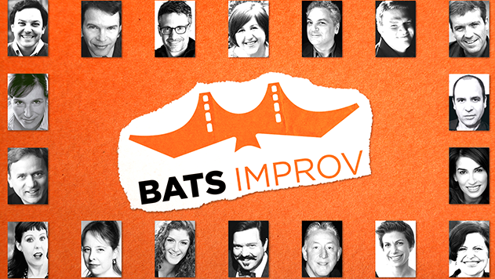

Online Shows
Real. Funny. Theatre.
BATS is pleased to bring the show to you, online via live streaming. Our online shows are free, with a suggested donation of $10 ($5 for student shows). Our virtual doors open about 15 minutes before show time.
Company Shows
Student Showcases & Cave Matches
Community
Check back in for updates on BATS Community Improv Jams!
*There are currently no jams scheduled* Join the BATS community for an evening of play and improv! The evening will be hosted by Lisa Rowland who will direct players in pairs and small groups. Afterwards there will be time for socializing and connection. It’s only $5, and it’s for anyone who’s ever taken any class at BATS!